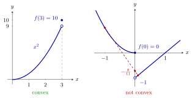

Continuity of Convex Functions¶
Theorem¶
Let be a convex set and let be a convex function. Then is continuous at every point of the interior .
More precisely, let , choose such that the points () lie in , and let be the largest value of at these points. Then for every with ,
Since is convex when is concave, a concave function is continuous on as well.
Interpretation¶
A convex function cannot jump inside its domain. Near an interior point the graph is squeezed between chords from both sides, so the function value cannot suddenly drop or rise. Only boundary points of can behave differently.

On the left is Example 2 below: on with jumps up at the endpoint , from the open circle at height to the filled point at , and is still convex. On the right is Example 1 below, drawn on part of its domain : jumps down at the interior point , from to the right limit . The chord from to passes at height , below , so the convexity inequality fails.
The proof makes this precise in two steps. First, every point close to is a convex combination of and the points , with weight on the outer points. Convexity of the epigraph then caps at , an upper bound. Second, is the midpoint of and , so cannot be much smaller either. The result is the estimate in the statement, which tends to as .
The interior is essential: at a boundary point there is no room for points on both sides. A convex function on may jump up at the endpoint , but not down (Example 2 below). Inside the domain, a jump always destroys convexity (Example 1 below).
The theorem gives continuity, not differentiability: is convex and continuous but has a corner at . It is often used in contrapositive form: a function that is discontinuous at an interior point is not convex. When piecewise functions are glued, the first condition is therefore continuity at the joint (Example 4 below). This continuity later combines with the extreme value theorem to give minima and maxima of convex functions on compact sets.
Key Results¶
- If is convex and is convex, then is continuous on ; in particular a convex function on or on an open convex set is continuous everywhere.
- The proof gives the local estimate for , with .
- Concave functions are continuous on as well (apply the theorem to , which is convex when is concave).
- Contrapositive: if is discontinuous at some point of , then is not convex (Example 1 below).
- At boundary points of the theorem says nothing: on with is convex, even strictly convex, but discontinuous at (Example 2 below).
Examples¶
1. A jump inside the domain. Consider a function on that is convex and continuous on and on with . A concrete instance is for and for , with and right limit . Take , and ; then and
The convexity inequality fails, as the theorem predicts, because is an interior point of .
2. A jump at the boundary. Let for and . For the strict inequality is that of . If and , every point with satisfies , so . So is strictly convex, although it jumps at . A jump down is not allowed: with instead, the midpoint of and gives .
3. The estimate for . For , and , the points are and , so and the theorem gives for . Directly, for , in agreement.
4. Gluing needs continuity. For if and if , the point is interior to . If is convex, it is continuous at , which forces . For example, , gives the right limit , so is not convex, and no derivative needs to be computed. In the same way, a function on glued from on , the value and on can only be convex if .
Prerequisites¶
- Convex and Concave Functions on
- Interior of a Set
- Continuity between Metric Spaces
- Convex Combination
- Epigraph
Related Concepts¶
- One-Sided Derivatives and Convexity
- Interior and Closure of a Convex Set
- Strictly Convex Function
- Sublevel Sets of Convex Functions
- Quasi-Convex Function
- Extrema of Convex Functions on Compact Sets
- Continuity
Sources¶
- Math VI: Convexity and Optimization · Week 1
- H. E. Nusse and M. Dienstknecht, Math VI: Convexity and Optimization, lecture notes 2026–2027, Section 1.2
Aliases: convex functions are continuous, continuity on the interior, jump of a convex function at the boundary Keywords: f\text{ convex}\Rightarrow f\text{ continuous on }\operatorname{Int}(D), |f(\boldsymbol{x}_0+\boldsymbol{h})-f(\boldsymbol{x}_0)|\leq\frac{M-f(\boldsymbol{x}_0)}{r}\sqrt{n}\,|\boldsymbol{h}|, \boldsymbol{x}_0\pm r\boldsymbol{e}_k, jump at a boundary point, discontinuity at an interior point rules out convexity Symbols: alpha, beta, element of, infinity, lambda, phi, real numbers, square root, subset
Last updated: 10 November 2026 16:43
Continuity of Convex FunctionsExtrema of Convex Functions on Compact SetsOne-Sided Derivatives and ConvexityConvex and Concave Functions on R^nInterior of a SetContinuity between Metric SpacesConvex CombinationEpigraphInterior and Closure of a Convex SetStrictly Convex FunctionSublevel Sets of Convex FunctionsQuasi-Convex FunctionContinuity